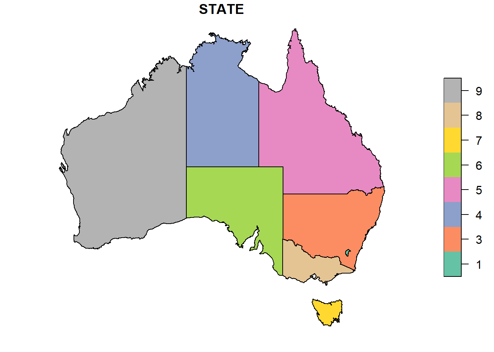
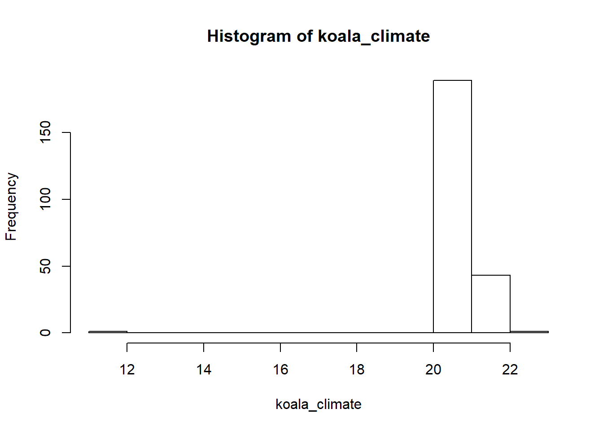
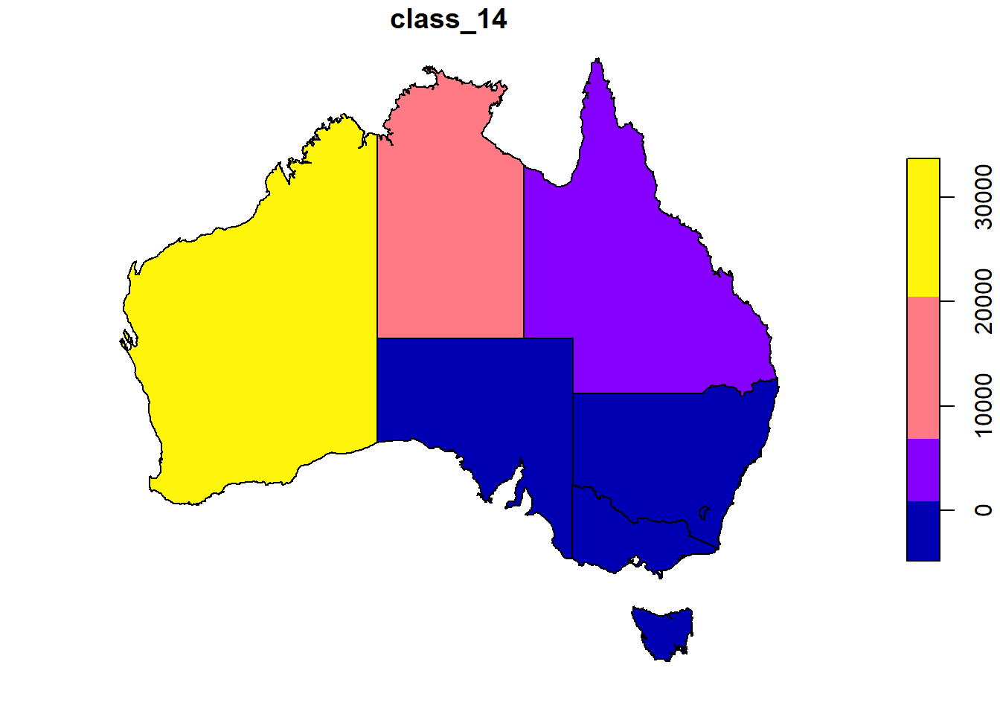
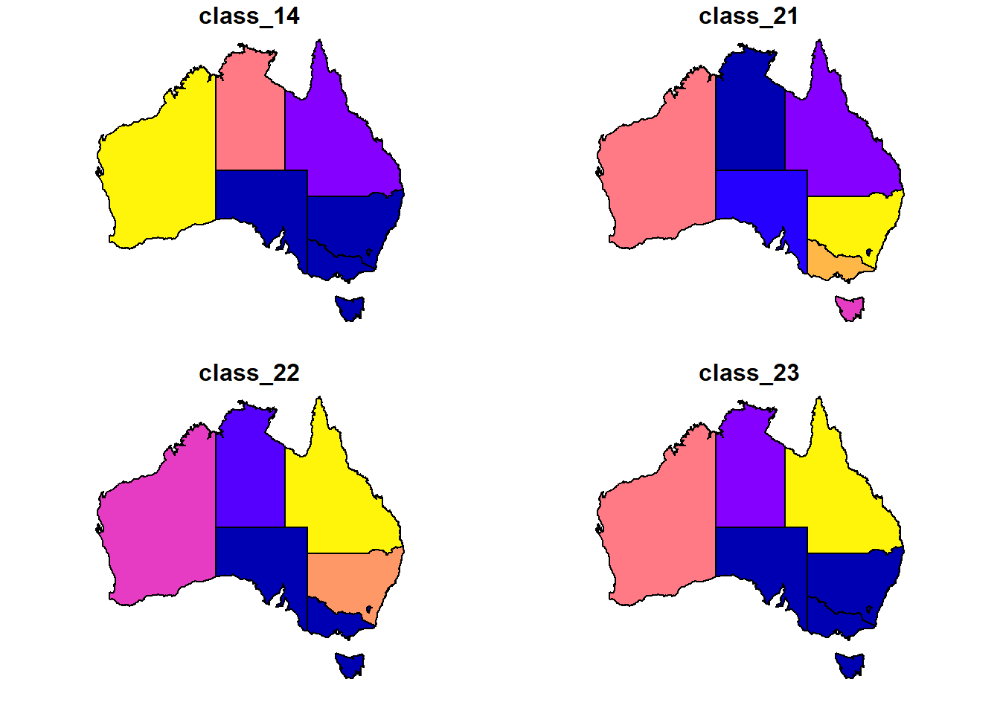

5 Combining Vector and Raster Data
For most spatial analysis you are interested in the relationship between several layers. Sometimes you need to combine only raster layers, sometimes raster and vector data, sometimes you only work in the vector world.
Here are three examples of possible combinations, but of course there are many more (For example ESRI (the company behind ARC-GIS) have an extensive online help that explains many concepts and tools with text and pictures).
Now we want to find out 3 things: 1. How many koalas are in which temperature zone? (vector (point) & raster) 2. How are the temperature zones distributed across the states? (vector (polygon) & raster) 3. How many koalas are in which state? (vector (point) and vector (polygon))
To find out, we have to intersect the two different layers with each other to find out how they relate to each other. This can be done with the command extract() from the raster package. In case you have not done so, read in the shapefile of the Australian states.
Data: you will need to have worked through the raster part in order to have the raster with the climate categories. Of course you can try the exercise with any other raster data you are interested in. Feel free to download other species or climate information from online repositories like ALA, OBIS, or worldclim.
## Reading layer `AU_states' from data source `C:\Users\wilko\Documents\University\EE_Intro_Spatial_Workshop\data\AU_states.shp' using driver `ESRI Shapefile'
## Simple feature collection with 8 features and 15 fields
## geometry type: POLYGON
## dimension: XY
## bbox: xmin: 113.156 ymin: -43.637 xmax: 153.635 ymax: -10.69
## epsg (SRID): NA
## proj4string: +proj=longlat +ellps=GRS80 +no_defs## OGR data source with driver: ESRI Shapefile
## Source: "C:\Users\wilko\Documents\University\EE_Intro_Spatial_Workshop\data\AU_states.shp", layer: "AU_states"
## with 8 features
## It has 15 fields
## Integer64 fields read as strings: OBJECTID PLANIMETRI SYMBOL## class : SpatialPolygonsDataFrame
## features : 8
## extent : 113.156, 153.635, -43.637, -10.69 (xmin, xmax, ymin, ymax)
## coord. ref. : +proj=longlat +ellps=GRS80 +no_defs
## variables : 15
## names : OBJECTID, FEATURETYP, STATE, FEATUREREL, ATTRIBUTER, PLANIMETRI, SOURCE, UFI, CREATIONDA, RETIREMENT, PID, SYMBOL, STATENAME, SHAPE_Leng, SHAPE_Area
## min values : 1, mainland, 1, NA, NA, 0, NA, FF00010107, NA, NA, 0, 0, Australian Capital Territory, 2.757198, 0.2338955
## max values : 8, mainland, 9, NA, NA, 0, NA, FF00010193, NA, NA, 0, 0, Western Australia, 102.585497, 227.4586760
## OGR data source with driver: ESRI Shapefile
## Source: "C:\Users\wilko\Documents\University\EE_Intro_Spatial_Workshop\data\AU_states.shp", layer: "AU_states"
## with 8 features
## It has 15 fields
## Integer64 fields read as strings: OBJECTID PLANIMETRI SYMBOL5.1 Challenge 1: Which climate do koalas like?
When we extract data to points, each point will fall within one cell, so we don’t have to worry about summarizing data. If you have not done so yet, read in the koala data again. You also want to check if they are in the same coordinate reference system before you do you analysis.
# reading csv file
koala <- read.csv("data/koala.csv")
# convert to sf
koala_sf <- st_as_sf(koala,
coords = c("Longitude",
"Latitude"),
crs = 4326)
crs(koala_sf) ## [1] "+proj=longlat +datum=WGS84 +no_defs"## CRS arguments:
## +proj=longlat +datum=WGS84 +no_defs +ellps=WGS84 +towgs84=0,0,0st_crs(koala_sf) <- crs(climate_au) # if they are the same, but spelled differently, or one is not defined, you can assign the crs of one layer to the other.
koala_climate <- raster::extract(climate_au,
koala_sf,
na.rm = TRUE) Note: sometimes, the name of a function exists in more than one package. Here, the function extract() also exists in the tidyverse. In order to tell R which one you want to use, you can specify with package::function(). You can try out what happens when you just try to use extract().
Check your results: Are there NA values? Why do you think there are NA values?
Which climate do koalas like? Often, a simple plot is more informative than a map.

5.2 Challenge 2: Extract rasters to polygons: how to summarize more complex extractions.
When you extract data to polygons, like the states of Australia, you potentially have a lot of different values within each state, so we have to decide what we want to do with these values
Note: if your vector data is not an sf-object, you might need to use spTransform instead of st_transform when reprojecting, because some packages only talk to a specific data format and can’t work with others.
## [1] "+proj=longlat +ellps=GRS80 +no_defs"## CRS arguments:
## +proj=longlat +datum=WGS84 +no_defs +ellps=WGS84 +towgs84=0,0,0states_pr <- st_transform(states,
crs(climate_au))
state_climate <- raster::extract(climate_au,
states_pr,
factors = TRUE,
df = TRUE,
na.rm = TRUE)Now we want to sum up all cells within each state for each category
What does your output look like if you don’t use the as.data.frame() command? Why do you think it is more useful as a data.frame? How would it be even more useful?
5.3 Attach the new information to your shapefile
To be able to use your new information in a map, we join our results onto our shapefile as new columns. This is slightly more advanced, so don’t worry if you don’t get this bit quite yet.
table() gives you a summary overview for two parameters, but it is not accessible like other forms (like data.frame or matrix) in R, so it might be a bit tricky to attach it directly to an existing table. By transforming the results from table() into another format you make your life easier. When you want to join columns to an existing table and want to make sure that you don’t mess up the order, you can use a shared column for matching lines up with each other. So a bit of preparation is needed to get the results from table() ready for a join to the spatial data:
class.counts <- table(state_climate$ID,
state_climate$layer) %>%
as.matrix.data.frame() %>%
as.data.frame() %>%
setNames(paste0("class_", c(11, 12, 13, 14, 21, 22, 23, 24)))
class.counts$OBJECTID <- as.numeric(rownames(class.counts)) # 1:8 not recommended
states_pr <- left_join(states_pr,
class.counts,
by = "OBJECTID")Now we can create maps that show the cell count of the different climate categories in each state. You can plot single maps, or a combination


5.4 Count points in polygons
(This is more or less what you already did in the vector part and just here for the sake of completion)
We can also count how many Koalas are in each state, and attach the information in the attribute table of the states:
## although coordinates are longitude/latitude, st_intersection assumes that they are planar## Warning: attribute variables are assumed to be spatially constant
## throughout all geometriesstate.counts <- as.data.frame(table(state_koala$STATENAME,
state_koala$Species))
states_pr$koala_count <- state.counts$Freq
print(state.counts)## Var1 Var2 Freq
## 1 Australian Capital Territory Phascolarctos cinereus 0
## 2 New South Wales Phascolarctos cinereus 181
## 3 Northern Territory Phascolarctos cinereus 0
## 4 Queensland Phascolarctos cinereus 16
## 5 South Australia Phascolarctos cinereus 14
## 6 Tasmania Phascolarctos cinereus 0
## 7 Victoria Phascolarctos cinereus 31
## 8 Western Australia Phascolarctos cinereus 0If you don’t always work with package sf, and you still want to be really sure that things that you calculated will get filled in the right columns and rows, you can always do a merge:
states2 <- merge(states1,
state.counts,
by.x = "STATENAME",
by.y = "Var1",
sort = TRUE)
head(states2@data)## STATENAME OBJECTID FEATURETYP STATE FEATUREREL
## 8 Western Australia 1 mainland 9 <NA>
## 4 Queensland 2 mainland 5 <NA>
## 5 South Australia 3 mainland 6 <NA>
## 7 Victoria 4 mainland 8 <NA>
## 1 Australian Capital Territory 5 mainland 1 <NA>
## 6 Tasmania 6 mainland 7 <NA>
## ATTRIBUTER PLANIMETRI SOURCE UFI CREATIONDA RETIREMENT PID SYMBOL
## 8 <NA> 0 <NA> FF00010129 <NA> <NA> 0 0
## 4 <NA> 0 <NA> FF00010169 <NA> <NA> 0 0
## 5 <NA> 0 <NA> FF00010107 <NA> <NA> 0 0
## 7 <NA> 0 <NA> FF00010178 <NA> <NA> 0 0
## 1 <NA> 0 <NA> FF00010181 <NA> <NA> 0 0
## 6 <NA> 0 <NA> FF00010193 <NA> <NA> 0 0
## SHAPE_Leng SHAPE_Area Var2 Freq
## 8 102.585497 227.4586760 Phascolarctos cinereus 0
## 4 78.230893 151.7205320 Phascolarctos cinereus 16
## 5 61.940128 91.7623310 Phascolarctos cinereus 14
## 7 35.336464 22.9619050 Phascolarctos cinereus 31
## 1 2.757198 0.2338955 Phascolarctos cinereus 0
## 6 21.742202 7.0119035 Phascolarctos cinereus 0Of course there are many more ways to analyse raster and vector data, this was just a first taste of common operations. Don’t forget: there are usually many different ways (including different packages and commands) to get to the same result. Public forums like stackoverflow offer a way to find alternative ways and also post specific questions when you get stuck. Don’t be shy! It is usually also a good idea to run some tests on a small dataset or subset where you can check manually that you get the result that you want and all numbers make sense.